A visual journal / selected frames
LIGHT.
TIME.
FRAME.
Observe / Wait / Compose / ReleaseWildlife / Travel / Landscape / StreetThe frame remembers what the moment forgetsObserve / Wait / Compose / ReleaseWildlife / Travel / Landscape / StreetThe frame remembers what the moment forgets
This gallery is intentionally separate from the data portfolio. Different rhythm. Different typography. Different atmosphere. Same person behind the work.
I like photographs that make a fraction of a second feel larger than time. The subject matters — but so do patience, geometry, light, distance, and the decision to press the shutter.
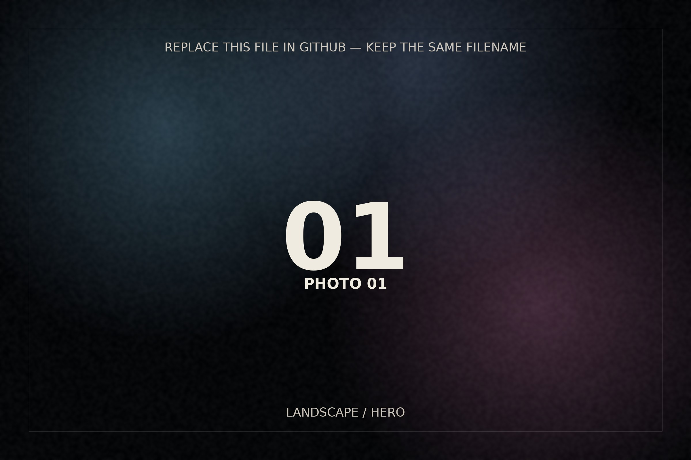
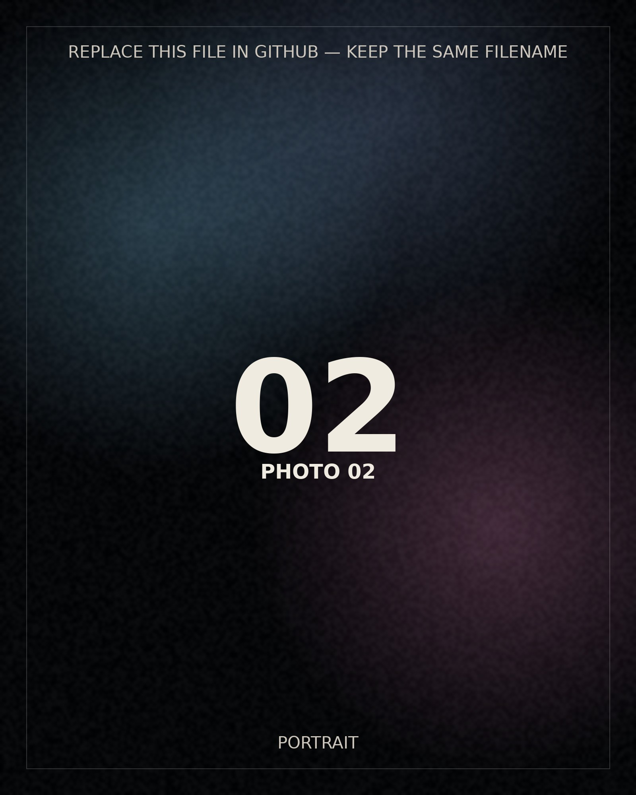
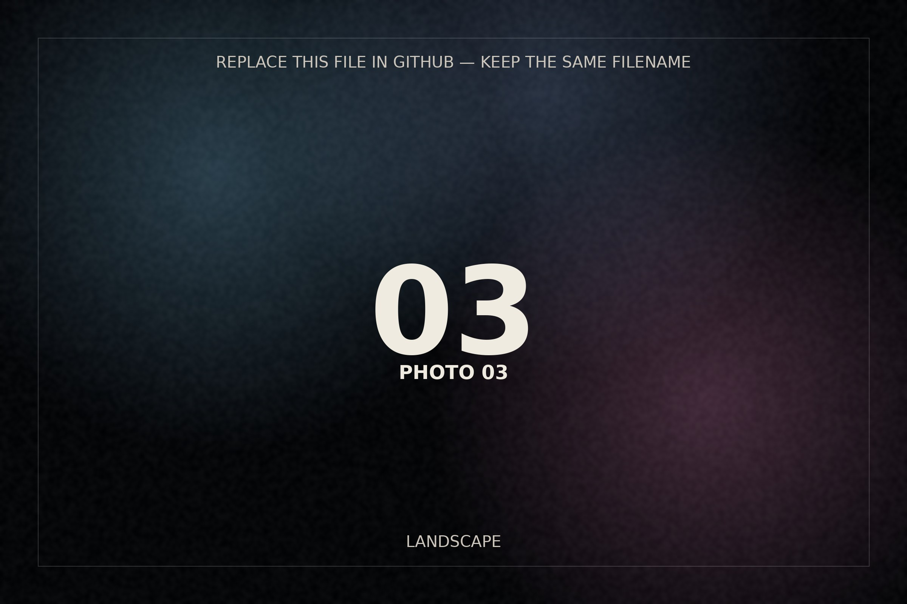
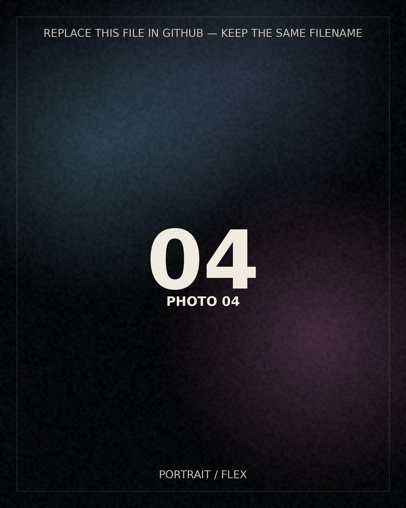
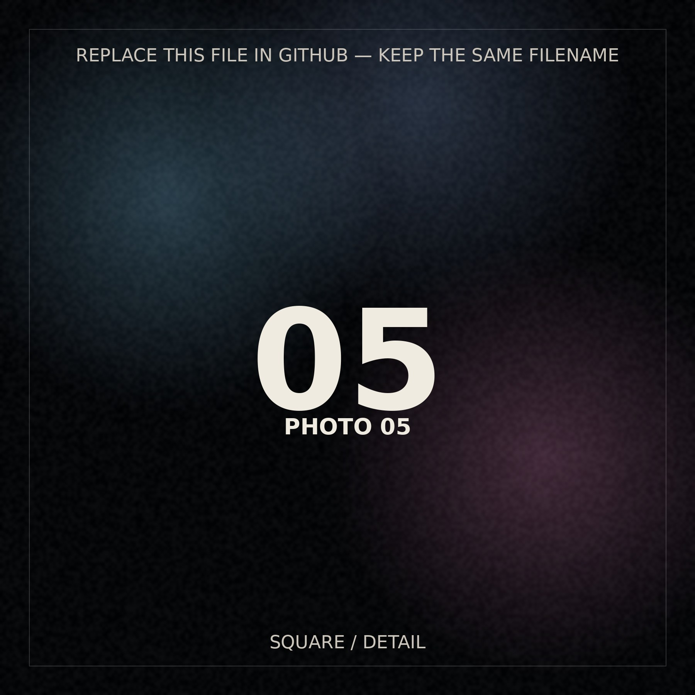
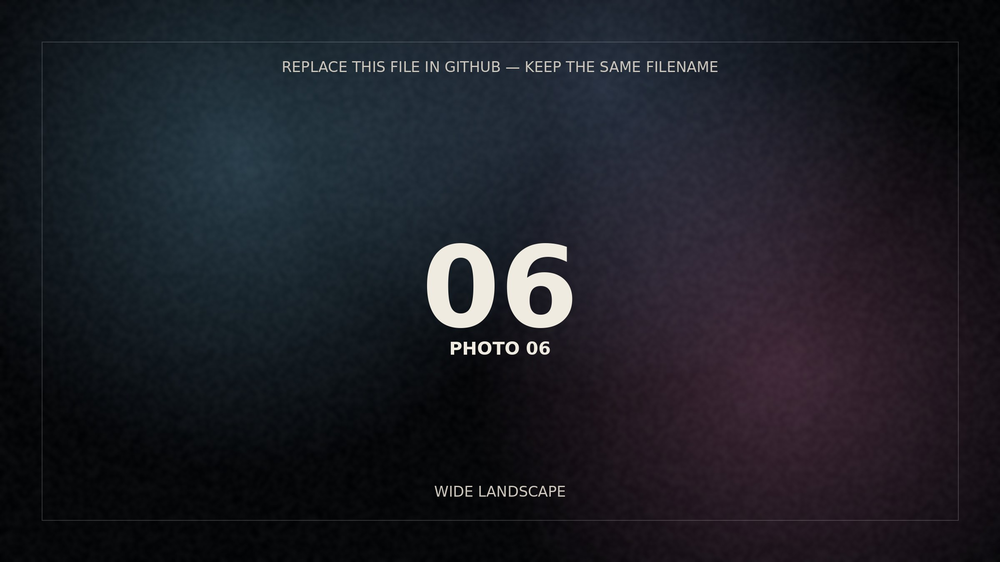
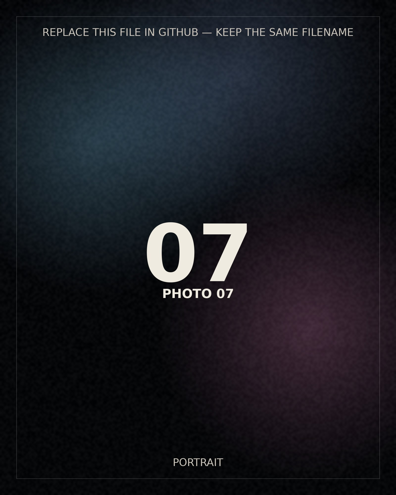
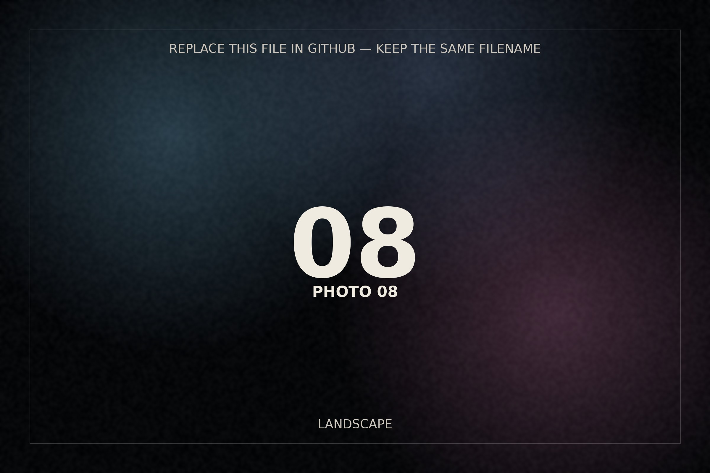
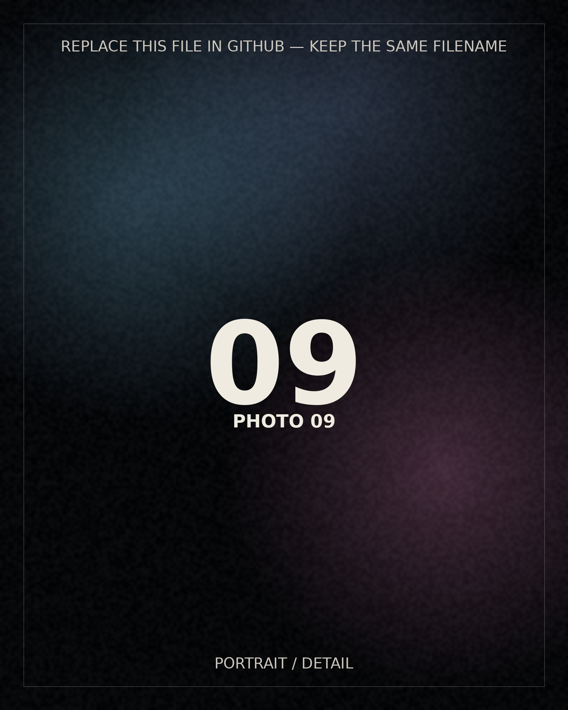
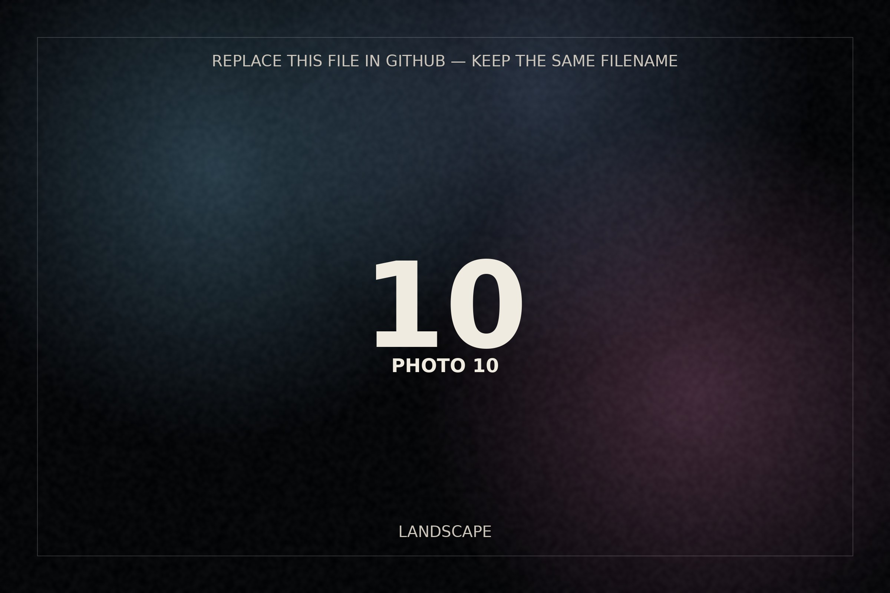
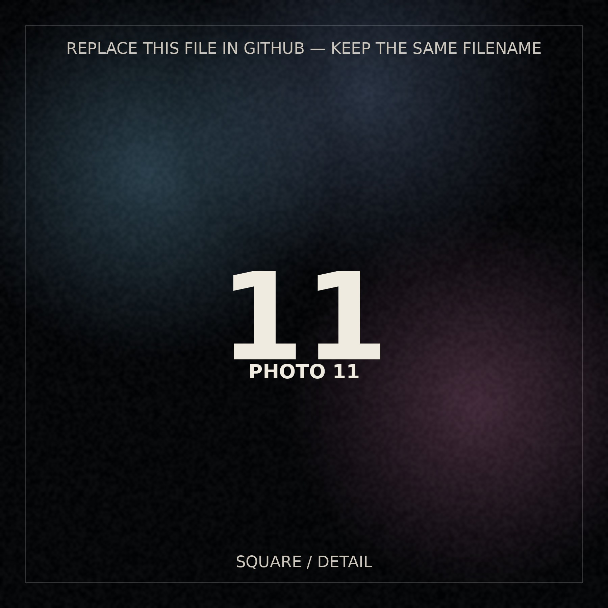
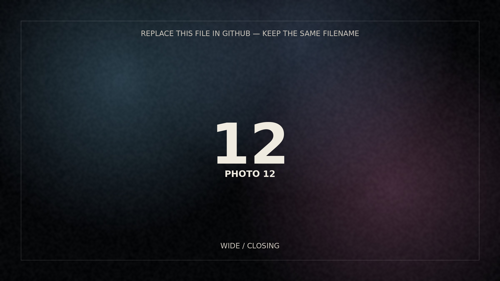
The camera
slows me down.
When your final images are ready, you only need to replace the twelve files inside the photos/ folder. The layout, animation, lightbox, and responsive crops are already wired.